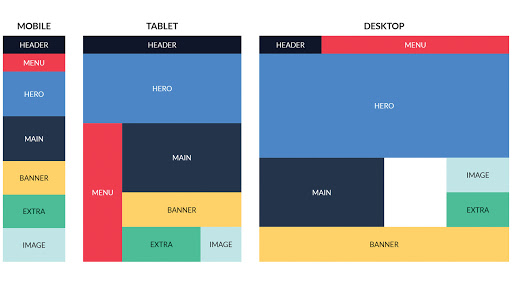

FLEX BOX
El Módulo de Caja Flexible, comúnmente llamado flexbox, fue diseñado como un modelo
unidimensional de layout, y como un método que pueda ayudar a distribuir
el espacio entre los ítems de una interfaz y mejorar las capacidades de alineación. Este artículo
hace un repaso de las principales características de flexbox, las que
exploraremos con mayor detalle en el resto de estas guías.

CSS GRID
CSS Grid layout contiene funciones de diseño dirigidas a los desarrolladores
de aplicaciones web. El CSS grid se puede utilizar para lograr muchos diseños
diferentes. También se destaca por permitir dividir una página en áreas o regiones
principales, por definir la relación en términos de tamaño, posición y capas entre
partes de un control construido a partir de primitivas HTML.
